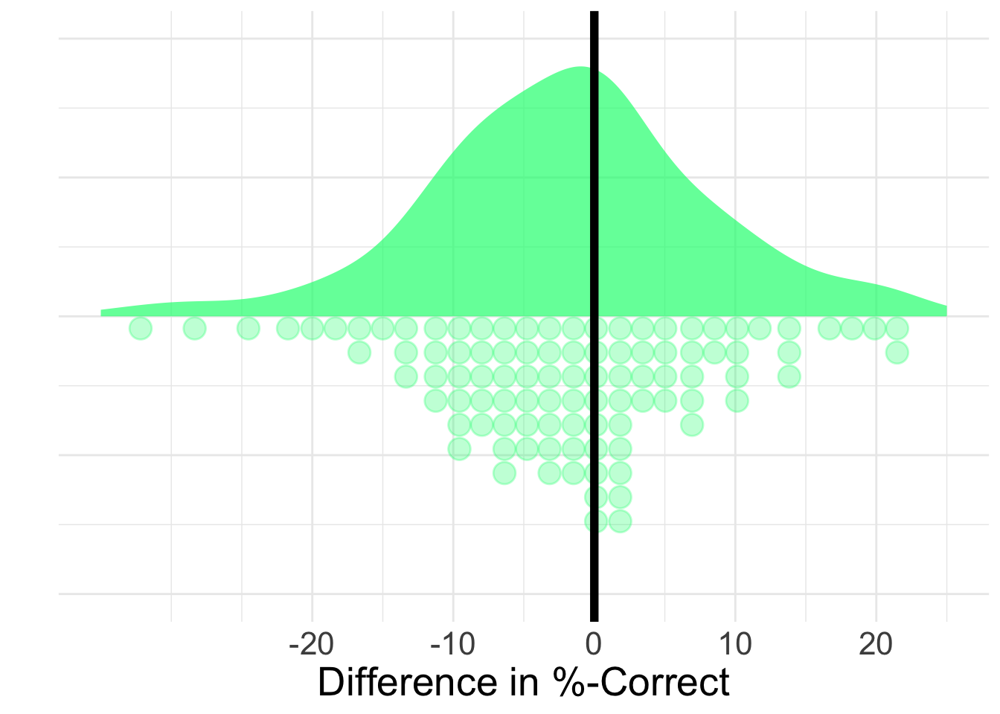
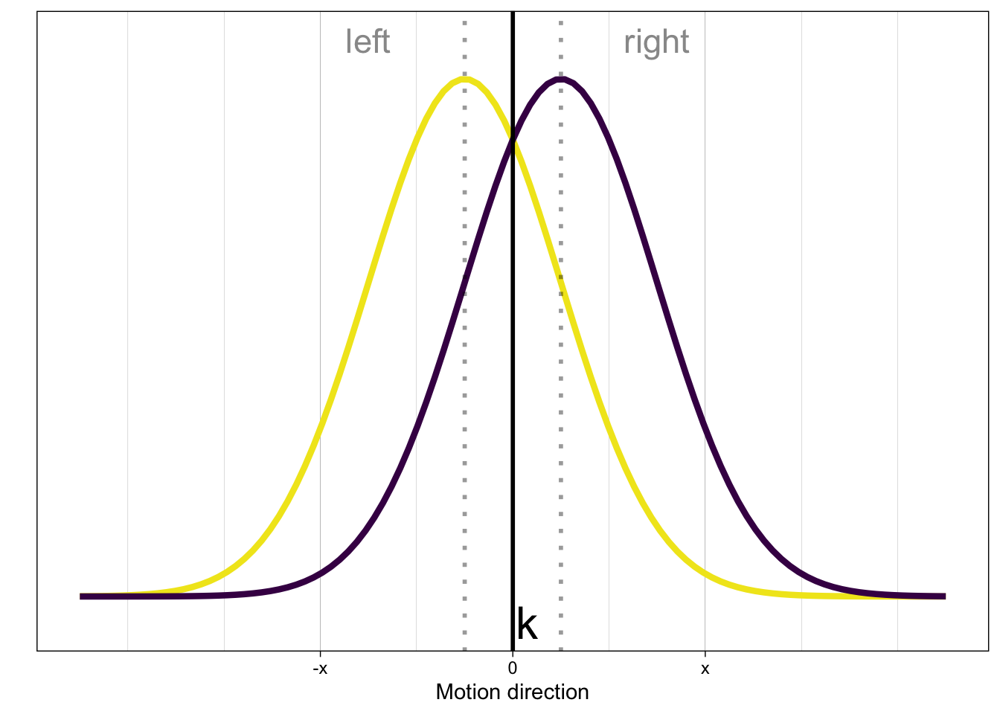

![]()
flowchart TD %%c((Condition)):::A --> r s((Sensitivität)):::A --> r((resp)):::B classDef A fill:#ffffff, r:45px classDef B fill:#e5e4e4, r:45px
Modellieren 2
Das Experiment
Im Random Dot Experiment mussten die Versuchspersonen ein perzeptuelle Entscheidungsaufgabe bearbeiten. Dabei musste jeweils entscheiden werden, in welche Richtung sich eine Punktewolke bewegt.
Es gibt verschiedene möglichkeiten die Leistung der Versuchspersonen im Random Dot Task zu beschreiben.
DAG
Daten
# A tibble: 6 × 5
id condition stimulus resp corr
<chr> <chr> <chr> <chr> <dbl>
1 sub-10209782 speed left right 0
2 sub-10209782 speed right right 1
3 sub-10209782 speed left left 1
4 sub-10209782 speed right right 1
5 sub-10209782 speed right right 1
6 sub-10209782 speed left left 1%-Correct
Wir können anschauen, in wie vielen Fällen die perzeptuelle Entscheidung richtig getroffen wurden. In diesem Fall können wir die Sensitivität jeder Versuchsperson aufgrund der gegebenen Antworten (resp) berechnen. Im Datensatz habe wir die Variable corr. Diese Variable nimmt den Wert 1 an, wenn die Aufgabe richtig gelöst wurde. Wenn die Aufgabe falsch gelöst wurde, nimmt sie den Wert 0 an. Wenn wir den Durchschnitt (mean()) dieser Variable berechnen, erhalten wir die Propotion an korrekten Antworten.
Hands-on:
Erstellen Sie ein neues R Projekt.
Laden Sie die vollständigen Daten des Random Dot Experiments hier herunter und speichern Sie diese im erstellten Projekt.
Öffnen Sie ein neues Skript und laden Sie die heruntergeladenen Daten.
Berechnen Sie die Sensitivität für jede Versuchsperson individuell (vgl. Datensatz unten).
d_sens = |>
...
...
...# A tibble: 6 × 2
id sens
<chr> <dbl>
1 sub-10209782 81.7
2 sub-10860809 65.8
3 sub-11628277 73.3
4 sub-11764630 52.5
5 sub-11874807 90
6 sub-12063050 90 Im Experiment haben wir die Instruktion (speed, accuracy) innerhalb der Versuchspersonen manipuliert. Jede Versuchsperson wurde also beiden Bedingungen ausgesetzt. Wir erwarten nicht, dass diese Manipulation einen Einfluss auf die Sensitivität hat. Zur Kontrolle können wir diese Erwartung in den Daten Kontrollieren.
Hands-on:
Berechnen Sie nun die Sensitivität für jede Versuchsperson individuell getrennt für die beiden Bedingungn
speedundaccuracy.Der resultierende Datensatz der berechneten Sensitivitäten ist im Long-Format. Überführen Sie den Datensatz in das Wide-Format, um die Daten einfacher verständlich zu machen. (vgl. Datensatz unten).
d_sens_2 = d |>
...
...
...# A tibble: 271 × 3
# Groups: id [271]
id accuracy speed
<chr> <dbl> <dbl>
1 sub-10209782 76.7 86.7
2 sub-10860809 81.7 50
3 sub-11628277 78.3 68.3
4 sub-11764630 56.7 48.3
5 sub-11874807 93.3 86.7
6 sub-12063050 88.3 91.7
7 sub-12604325 61.7 70
8 sub-13237045 86.7 81.7
9 sub-13337405 56.7 53.3
10 sub-13362877 78.3 91.7
# ℹ 261 more rowsProblem mit %-Correct
Wir haben gesehen, dass die Proportion der korrekten Antworten (%-Correct) als Mass für die Sensitivität an seine Grenzen stösst. Wir benötigen also ein anderes Modell, dass unsere Daten besser erklären kann.

Signal-Detektionstheorie (SDT)
Die SDT ist eine statistische Entscheidungstheorie, deren zentrale Fragestellung lautet: was ist der (unbekannte) Zustand der Welt, angesichts der verrauschten Daten, die von den Sinnessystemen bereitgestellt werden?
Wir werden nun die Signal Detection Theorie anhand unseres Experiments durchgehen. Dieses werden wir aus zwei Perspektiven betrachten: 1) aus der Perspektive einer Person, welche die Aufgabe hat, Stimuli in zwei Klassen zu klassifizieren und 2) aus der Perspektive eines Modells, das die Leistung der Person in der Aufgabe vorhersagt.
Die Perspektive der Versuchsperson
Wir betrachten ein Experiment, bei dem eine Person einen Stimulus in eine von zwei möglichen Kategorien einordnen muss. Im Random Dot Experiment haben wir die Stimuluskategorien Bewegung nach links und Bewegung nach rechts verwendet.
Die Aufgabe der Person ist es, eine binäre Klassifikation mit den Antwortoptionen links und rechts durchzuführen. Die Antwortoptionen entsprechen den beiden möglichen Zuständen der Welt, oder genauer gesagt, Hypothesen der Person über die möglichen Zustände der Welt.
Annahmen
Die Person verarbeitet den Stimulus und gelangt zu einer internen Repräsentation des Stimulus. Diese interne Repräsentation ist nicht deterministisch, sondern variiert zufällig. Die interne Repräsentation demzufolge eine Zufallsvariable \(X\). Wir nehmen an, dass die interne Repräsentation normalverteilt ist.
Die Zufallsvariable \(X\) repräsentiert die Information, die die Person über den Stimulus hat, also die Evidenz.
Die Person weiss, dass die \(X\) aus einer von zwei Verteilungen gezogen wurde, die sich nur in ihrer Lage (in ihrem Mittelwert) unterscheiden. Welche Verteilung es war, weiss die Person jedoch nicht – dies muss sie anhand eines Kriteriums entscheiden.
Die Person hat ein Kriterium \(k\), das sie verwendet, um zu entscheiden, ob der Stimulus
rechtoderlinksist. Eine einfache Entscheidungsregel lautet: Wenn \(X > k\), dann bewegen sich die Punkte nach rechts, andernfalls nach links.

Die Perspektive des/der externen Beobachter*in
Die Leistung der Versuchsperson kann durch die Wahrscheinlichkeit beschrieben werden, dass sie einen Treffer (Hit) oder einen False Alarm produziert. Diese Wahrscheinlichkeiten werden als Hit Rate und False Alarm Rate bezeichnet. Die Hit Rate ist die Wahrscheinlichkeit, dass die Person einen Treffer produziert, wenn der Stimulus rechts ist. Die False Alarm Rate ist die Wahrscheinlichkeit, dass die Person einen Falschalarm produziert, wenn der Stimulus links ist.
Die Antworten der Versuchspersonen können in einer Tabelle zusammengefasst werden, mit vier möglichen Ergebnissen.
| Stimulus | ||
|---|---|---|
| Antwort | Rechts | Links |
| Rechts | Hit | False alarm (FA) |
| Links | Miss | Correct rejection (CR) |
- Hit: Stimulus ist
rechts, Antwort istrechts - Miss: Stimulus ist
rechts, Antwort istlinks - False alarm: Stimulus ist
links, Antwort istrechts - Correct rejection: Stimulus is
links, Antwort istlinks
Hands-on:
Setzen Sie diese verbale Beschreibung in r-Code um.
- Erstellen Sie dazu im Random Dot Datensatz mit der Funktion
mutate()eine Variabletype. In dieser Variable soll für jeden Trial stehen, ob es sich um einenHit, einenMiss, einenFAoder eineCRhandelt (vgl. Daten unten).
d_sdt = d |>
mutate(type = ___)# A tibble: 6 × 4
id stimulus resp type
<chr> <chr> <chr> <chr>
1 sub-10209782 left right ...
2 sub-10209782 right right ...
3 sub-10209782 left left ...
4 sub-10209782 right right ...
5 sub-10209782 right right ...
6 sub-10209782 left left ... SDT Parameter
Die beiden wichtigsten Parameter der Signal-Detektionstheorie sind \(d'\) und \(c\).
\(d'\) ist ein Mass für die Sensitivität eines Beobachters bei der Unterscheidung zwischen zwei Stimulusklassen. Ein größerer \(d'\)-Wert zeigt eine grössere Sensitivität an. Dies bedeutet, dass die Verteilungen der beiden Stimulusklassen stärker voneinander getrennt sind und somit leichter unterscheidbar sind.
\(c\) ist ein Mass dafür, ob eine Voreingenommenheit (bias) für eine der beiden Antwortoptionen besteht. Genauer gesagt ist \(c\) der Abstand vom tatsächlichen Kriterium zum Punkt welcher genau zwischen den Verteilungen liegt.
DAG
flowchart TD %%c((Condition)):::A --> r c((c)):::A --> r s((d')):::A --> r((resp)):::B classDef A fill:#ffffff, r:30px classDef B fill:#e5e4e4, r:30px
Daten
# A tibble: 6 × 5
id condition stimulus resp corr
<chr> <chr> <chr> <chr> <dbl>
1 sub-10209782 speed left right 0
2 sub-10209782 speed right right 1
3 sub-10209782 speed left left 1
4 sub-10209782 speed right right 1
5 sub-10209782 speed right right 1
6 sub-10209782 speed left left 1Um \(d'\) und \(c\) aus den beobachteten Antworthäufigkeiten zu berechnen, müssen wir zuerst die relativen Häufigkeiten der Hits (Hit Rate) und der False Alarms (FA Rate) berechnen.
Die Hits sind die rechts-Antworten auf rechts-Stimuli. Dies bedeutet, dass wir zählen, wie oft bei einem rechts Stimulus die Antwort rechts war. Die False Alarms sind die rechts-Antworten auf links-Stimuli. Dies bedeutet, dass wir zählen, wie oft bei einem links Stimulus die Antwort `rechts`` war. \[ Hit~Rate = \frac{Hits}{Hits + Misses} \] \[ FA~Rate = \frac{False Alarms}{False Alarms + Correct Rejections} \]
Mit den folgenden Gleichungen können wir nun \(d'\) und \(c\) berechnen.
\[d' = z(Hit~Rate) - z(FA~Rate)\]
\[ c = - \frac{z(Hit~Rate)+z(FA~Rate)}{2} \]
Reuse
CC BY-SA 4.0
Citation
BibTeX citation:
@online{fitze,
author = {Fitze, Daniel and Ellis, Andrew and Wyssen, Gerda},
title = {Modellieren 2},
url = {https://kogpsy.github.io/neuroscicomplabFS24//pages/chapters/sdt_1.html},
langid = {en}
}
For attribution, please cite this work as:
Fitze, Daniel, Andrew Ellis, and Gerda Wyssen. n.d. “Modellieren
2.” https://kogpsy.github.io/neuroscicomplabFS24//pages/chapters/sdt_1.html.